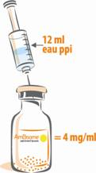
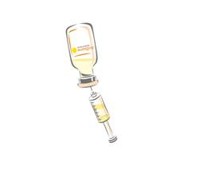
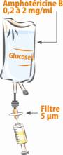

|
RÉSUMÉ DES CARACTÉRISTIQUES DU PRODUIT
ANSM - Mis à jour le : 12/02/2014
AMBISOME 50 mg, poudre pour suspension de liposomes pour perfusion
2. COMPOSITION QUALITATIVE ET QUANTITATIVE
Amphotéricine B ............................................................................................................................ 50,00 mg
Pour un flacon.
Pour la liste complète des excipients, voir rubrique 6.1.
Poudre pour suspension de liposomes pour perfusion.
4.1. Indications thérapeutiques
AMBISOME est un médicament antifongique indiqué chez l'adulte et l'enfant comme suit:
· Traitement des infections fongiques invasives à Aspergillus en alternative thérapeutique en cas d'échec ou d'intolérance au voriconazole.
· Traitement des infections fongiques invasives à Candida et des cryptococcoses neuro-méningées chez le sujet infecté par le VIH:
o Ayant développé une insuffisance rénale sous amphotéricine B définie par:
§ L'élévation de la créatininémie au-dessus de 220 micromol/l
ou
§ L'abaissement de la clairance de la créatinine au-dessous de 25 ml/min.
o En cas d'altération pré-existante et persistante de la fonction rénale définie par:
§ La créatininémie supérieure à 220 micromol/l
ou
§ La clairance de la créatinine inférieure à 25 ml/min.
Traitement empirique des infections fongiques présumées chez des patients neutropéniques fébriles. Le bénéfice maximum a été observé chez les patients greffés de moelle allogénique, les patients adultes avec une neutropénie supérieure ou égale à 7 jours à partir de l'introduction de l'antifongique, recevant en même temps des agents néphrotoxiques.
Traitement des leishmanioses viscérales en cas de résistance prouvée ou probable aux antimoniés.
4.2. Posologie et mode d'administration
· Traitement des infections fongiques invasives à Aspergillus et Candida. La dose recommandée est de 3 mg/kg/jour.
· Traitement des cryptococcoses neuro-méningées chez le sujet infecté par les VIH. La dose recommandée est de 3 mg/kg/jour.
· Traitement empirique des infections fongiques présumées chez des patients neutropéniques fébriles. La dose recommandée est de 3 mg/kg/jour.
· Traitement des leishmanioses viscérales: la dose cumulative recommandée est de 18-24 mg/kg en 6 perfusions: une perfusion par jour pendant 5 jours consécutifs et une 6ème perfusion le 10ème jour chez l'enfant et le sujet immunocompétent.
· Chez le sujet immunodéprimé, les données sont limitées. Des doses jusqu'à 40 mg/kg sur 10 à 20 jours consécutifs ont été administrées.
En cas d'aggravation de la fonction rénale sous AMBISOME, la poursuite du traitement doit être discutée en fonction du rapport bénéfice/risque estimé. En l'absence de schéma validé d'adaptation posologique, il est proposé d'abaisser les doses d'AMBISOME à 1,5 mg/kg/jour de manière transitoire, ou d'espacer temporairement les perfusions.
Enfants
Les études cliniques montrent qu'en pédiatrie les doses sont identiques à celles utilisées chez l'adulte, rapportées au kilo de poids corporel.
Sujets âgés
Aucune donnée chez le sujet âgé (≥ 65 ans) ne permet de recommander un schéma posologique différent de celui de l'adulte.
Mode d’administration
Précautions à prendre avant la manipulation ou l’administration du médicament
Pour les instructions concernant la reconstitution et la dilution du médicament avant administration, voir rubrique 6.6.
AMBISOME doit être administré en perfusion intraveineuse stricte de 30 à 60 minutes. Si le patient ressent une gêne au cours de cette perfusion, la durée de la perfusion peut être prolongée. La concentration recommandée pour la perfusion intraveineuse est comprise entre 0,20 mg/ml et 2 mg/ml d’AMBISOME.
AMBISOME est contre-indiqué chez les patients présentant une hypersensibilité connue à l'amphotéricine B ou à tout autre constituant.
4.4. Mises en garde spéciales et précautions d'emploi
Ce médicament est soumis à prescription hospitalière.
Les premières doses, jusqu'à l'équilibration du traitement, sont administrées sous surveillance médicale afin de vérifier l'absence d'hypersensibilité immédiate et de déterminer la posologie et le débit optimaux.
Les réactions d'hypersensibilité qui peuvent survenir au cours de la perfusion, peuvent revêtir une gravité très variable:
· Réactions mettant en jeu le pronostic vital (comme le choc anaphylactique): elles sont rares. Dans ce cas, la perfusion doit être immédiatement arrêtée et le patient ne devra plus recevoir d'autre perfusion d'AMBISOME.
· Réactions généralement non graves: dans ce cas, des mesures de précaution devront être prises afin de prévenir ou de traiter ces réactions chez les patients recevant AMBISOME. Le recours à une vitesse de perfusion plus lente (sur deux heures) ou l'utilisation de paracétamol, d'antihistaminiques, d'antiémétiques ou de corticoïdes aux doses usuelles se sont montrés efficaces dans la prévention ou le traitement de ces réactions.
Les études ayant comparé la dose de 3 mg/kg/jour d'AMBISOME à des doses supérieures (5, 6 ou 10 mg/kg/jour) ont révélé une incidence nettement plus élevée des hausses de la créatininémie, des hypokaliémies et des hypomagnésémies dans les groupes recevant une forte dose.
Une évaluation biologique régulière de l'équilibre électrolytique, en particulier du potassium et du magnésium, ainsi que des fonctions rénales, hépatiques et hématopoïétiques doit être réalisée. Ceci est particulièrement important chez les patients recevant en même temps des médicaments néphrotoxiques (voir rubrique 4.5). En raison des risques d'hypokaliémie, l'administration d'un complément potassique adapté pourra être nécessaire pendant le traitement par AMBISOME. En cas d'altération cliniquement significative des fonctions rénales ou d'aggravation d'autres paramètres, il conviendra de diminuer la posologie, d'interrompre ou d'arrêter le traitement.
Ce médicament contient du saccharose. Son utilisation est déconseillée chez les patients présentant une intolérance au fructose, un syndrome de malabsorption du glucose et du galactose ou un déficit en sucrase/isomaltase. Pour les patients diabétiques, il faut noter que chaque flacon d'AMBISOME contient environ 900 mg de saccharose.
AMBISOME peut se révéler néphrotoxique, l'aggravation significative de la fonction rénale au cours du traitement par AMBISOME doit conduire à diminuer la posologie ou à interrompre le traitement jusqu'au retour à l'état antérieur; cette décision doit toutefois tenir compte des éventuels autres traitements pris simultanément par le patient et qui pourraient eux mêmes êtres néphrotoxiques.
Hémodialyse chronique: l'administration d'AMBISOME ne devra être commencée qu'après la fin de l'hémodialyse. Il n'est pas nécessaire d'adapter la posologie chez des patients sous hémofiltration.
Ce médicament est généralement déconseillé avec le sultopride (voir rubrique 4.5 interactions avec d'autres médicaments ou autres formes d'interactions).
4.5. Interactions avec d'autres médicaments et autres formes d'interactions
Au cours d'une étude clinique, l'amphotéricine B liposomale s'est révélée significativement moins néphrotoxique que l'amphotéricine B conventionnelle chez le sujet ayant reçu une greffe de moelle en cas d'association à la ciclosporine et/ou à certains aminosides (gentamycine, tobramycine, amikacine).
HYPOKALIEMANTS
L'hypokaliémie est un facteur favorisant l'apparition de troubles du rythme cardiaque (torsades de pointes, notamment) et augmentant la toxicité de certains médicaments, par exemple la digoxine. De ce fait, les médicaments qui peuvent entraîner une hypokaliémie sont impliqués dans un grand nombre d'interactions. Il s'agit des diurétiques hypokaliémiants, seuls ou associés, des laxatifs stimulants, des glucocorticoïdes, du tétracosactide et de l'amphotéricine B (voie IV).
MEDICAMENTS NEPHROTOXIQUES
L'utilisation conjointe de médicaments ayant une toxicité rénale propre augmente le risque de néphrotoxicité. Si une telle association est nécessaire, il faut renforcer la surveillance biologique rénale.
Les médicaments concernés sont représentés notamment par les produits de contraste iodés, les aminosides, les organoplatines, le méthotrexate à fortes doses, certains antiviraux tels que la pentamidine, le foscarnet, les "ciclovirs", la ciclosporine ou le tacrolimus.
+ Sultopride
Risque majoré de troubles du rythme ventriculaire, notamment de torsades de pointe.
Associations faisant l'objet de précautions d’emploi
+ Autres hypokaliémiants
Diurétiques hypokaliémiants (seuls ou associés), laxatifs stimulants, gluco et minéralocorticoïdes (voie générale), tétracosactide.
Risque majoré d'hypokaliémie.
Surveillance de la kaliémie et si besoin correction, notamment en cas de traitement digitalique.
+ Digitaliques
Hypokaliémie favorisant les effets toxiques des digitaliques.
Corriger auparavant toute hypokaliémie et réaliser une surveillance clinique, électrolytique et électrocardiographique.
+ Médicaments susceptibles de donner des torsades de pointe (sauf sultopride): antiarythmiques de classe Ia (quinidine, hydroquinidine, disopyramide) et de classe III (amiodarone, sotalol, dofétilide, ibutilide), certains neuroleptiques (thioridazine, chlorpromazine, lévomépromazine, trifluopérazine, cyamémazine, amisulpride, tiapride, sulpiride, halopéridol, dropéridol, pimozide), bépridil, cisapride, diphémanil, érythromycine IV, halofantrine, luméfantrine, méthadone, mizolastine, moxifloxacine, pentamidine, spiramycine IV, véralipride, vincamine IV…
Risque majoré de troubles du rythme ventriculaire, notamment de torsades de pointes.
Corriger toute hypokaliémie avant d'administrer le produit et réaliser une surveillance clinique, électrolytique et électrocardiographique.
+ Zidovudine
Augmentation de la toxicité hématologique (addition d'effets de toxicité médullaire).
Contrôle plus fréquent de l'hémogramme.
Associations à prendre en compte
+ Aminosides
Risque accru de néphrotoxicité.
+ Ciclosporine, tacrolimus
Augmentation de la créatininémie plus importante que sous l'immunodépresseur seul (synergie des effets néphrotoxiques des deux substances).
Les études chez l'animal n'ont pas mis en évidence d'effet tératogène. En l'absence d'effet tératogène chez l'animal, un effet malformatif dans l'espèce humaine n'est pas attendu. En effet, à ce jour, les substances responsables de malformations dans l'espèce humaine se sont révélées tératogènes chez l'animal au cours d'études bien conduites sur deux espèces.
En clinique, il n'existe pas actuellement de données suffisamment pertinentes pour évaluer un éventuel effet malformatif ou fœtotoxique de l'amphotéricine B liposomale lorsqu'elle est administrée pendant la grossesse.
L'utilisation de l'amphotéricine B liposomale ne doit être envisagée au cours de la grossesse que si nécessaire.
En cas d'administration en fin de grossesse, tenir compte de la toxicité rénale éventuelle de ce médicament pour le nouveau-né.
En l'absence de données sur le passage dans le lait de ce médicament, l'allaitement est déconseillé.
4.7. Effets sur l'aptitude à conduire des véhicules et à utiliser des machines
Les effets d'AMBISOME sur la capacité à conduire des véhicules et à utiliser des machines n'ont pas été étudiés. Certains des effets indésirables d'AMBISOME cités ci-après risquent d'altérer l'aptitude à conduire des véhicules ou à utiliser des machines.
Très fréquent (≥ 1/10)
Fréquent (≥ 1/100 et < 1/10)
Peu fréquent (≥ 1/1000 et < 1/100)
Rare (≥ 1/10000 et < 1/1000)
Très rare (<1/10 000)
Fréquence indéterminée
Réactions survenant au cours de la perfusion :
· Très fréquent : fièvre, frissons
· Fréquent: céphalées, dorsalgies, douleurs thoraciques, dyspnée, hypotension, vasodilatation, bouffées vasomotrices, tachycardie, éruption cutanée, œdème de Quincke
· Peu fréquent : bronchospasme
· Fréquence indéterminée: choc anaphylactique, douleurs musculo-squelettiques (décrites comme des arthralgies ou des douleurs osseuses)
Les effets indésirables autres que les réactions survenant au cours de la perfusion sont répertoriés ci-dessous par classe d’organes selon la classification MedDRA.
Affections hématologiques et du système lymphatique
Peu fréquent : thrombocytopénie
Fréquence indéterminée : anémie
Troubles du métabolisme et de la nutrition
Très fréquent : hypokaliémie
Fréquent : hyponatrémie, hypocalcémie, hypomagnésémie, hyperglycémie
Affections du système nerveux
Fréquent : céphalées
Fréquence indéterminée : convulsions
Affections cardiaques
Fréquent : tachycardie
Fréquence indéterminée : arrêt cardiaque, arythmie
Affections gastro-intestinales
Très fréquent : nausées, vomissements
Fréquent : diarrhées, douleurs abdominales
Affection hépatobiliaires
Fréquent : anomalies des tests hépatiques, hyperbilirubinémie, élévation des phosphatases alcalines
Affections musculo-squelettiques et systémiques :
· Fréquent : dorsalgie
· Fréquence indéterminée : rhabdomyolyse (associée à l'hypokaliémie), douleurs musculo-squelettiques (décrites comme des arthralgies ou des douleurs osseuses)
Affections du rein et des voies urinaires
Fréquent : élévation de la créatinine, hausse de l'urée sanguine
Fréquence indéterminée : dysfonctionnement rénal, insuffisance rénale
Investigations :
Pseudohyperphosphatémie*
* Il s‘agit d’une interférence analytique lorsque le dosage du phosphore inorganique est réalisé par la méthode PHOSm sur les analyseurs Beckman Coulter équipés du système LX20.
Par ailleurs, les effets suivants ont été rapportés lors de l'utilisation d'amphotéricine B mais peuvent éventuellement survenir avec AMBISOME :
· Généraux : malaise, perte de poids.
· Rénaux : acidose tubulaire distale.
· Gastro-intestinaux : anorexie, dyspepsie.
· Pulmonaires : œdème pulmonaire non cardiogénique.
· Neurologiques : perte d'audition, bourdonnement d'oreilles, troubles de la vision ou diplopie, vertiges, neuropathies périphériques.
· Locomoteurs : douleurs musculaires et articulaires.
· Cardiovasculaires : hypertension.
· Hématologiques : agranulocytose, leucopénie, éosinophilie.
· Locaux : douleurs au point d'injection avec ou sans phlébite ou thrombophlébite.
· Dermatologiques : prurit.
Déclaration des effets indésirables suspectés
La déclaration des effets indésirables suspectés après autorisation du médicament est importante. Elle permet une surveillance continue du rapport bénéfice/risque du médicament. Les professionnels de santé déclarent tout effet indésirable suspecté via le système national de déclaration : Agence nationale de sécurité du médicament et des produits de santé (Ansm) et réseau des Centres Régionaux de Pharmacovigilance - Site internet: www.ansm.sante.fr.
En cas de surdosage, on peut craindre principalement une atteinte rénale et des troubles électrolytiques. Dans ces cas, les perfusions seront arrêtées et un traitement symptomatique sera instauré. Un surdosage en amphotéricine B peut provoquer un arrêt cardiocirculatoire notamment chez l'enfant.
5. PROPRIETES PHARMACOLOGIQUES
5.1. Propriétés pharmacodynamiques
ANTIMYCOSIQUE A USAGE SYSTEMIQUE, code ATC:J02AA01
L'amphotéricine B est un antibiotique antifongique de la famille des polyènes macrocycliques, produit par une souche de Streptomyces nodosus.
Les liposomes sont des vésicules doses, sphériques obtenues en mélangeant des proportions spécifiques de substances amphiphiles, tels que phospholipides et cholestérol, qui vont former des bicouches uniques ou multiples lorsqu'elles se trouvent en solution aqueuse. AMBISOME est constitué de petits liposomes unilamellaires (SUVs: small unilamellar vesicles), d'un diamètre inférieur à 100 nm. L'amphotéricine B est intercalée dans la membrane, et stabilisée par un complexe de transfert de charges avec le distéaroylphosphatidylglycérol et par la présence de cholestérol. Le principe actif fait partie intégrante de la structure globale des liposomes d'AMBISOME.
Le mécanisme d'action spécifique (ciblage de l'infection fongique) d'AMBISOME est dû à plusieurs facteurs aboutissant à une concentration fongicide d'amphotéricine B délivrée au niveau de la membrane cellulaire du champignon. L'amphotéricine B est fermement insérée dans la bicouche des liposomes. AMBISOME, de par sa stabilité, reste intact dans la circulation à fortes concentrations pendant des périodes de temps prolongées. Ceci entraîne une distribution tissulaire élevée comparativement à celle de l'amphotéricine B non liposomale.
AMBISOME interagit directement avec les champignons en exerçant un effet fongicide renforcé. Les liposomes adhérent à la paroi cellulaire du champignon, site de l'interaction locale avec AMBISOME. Cette interaction rompt le liposome et l'amphotéricine B est libérée et endommage la membrane cellulaire du champignon, entraînant sa mort.
Activité microbiologique
L'amphotéricine B a démontré une activité contre les germes responsables des mycoses systémiques suivantes:
Candida albicans, Rhodotorula, Aspergillus fumigatus, Cryptococcus neoformans, Mucor mucedo, Absidia, Rhizopus, Histoplasma capsulatum, Blastomyces dermatitidis, Sporothrix schenckii dans la sporotrichose disséminée, Coccidioïdes immitis.
L'amphotéricine B a démontré une activité faible ou relative (variable) contre les germes responsables des mycoses systémiques suivantes:
Candida non albicans, en particulier C parapsilosis, Aspergillus fumigatus dans l'aspergillome, Conidiobolus, Sporothrix schenckii dans la sporotrichose lymphocutanée, Coccidioïdes immitis dans les atteintes pulmonaires diffuses.
L'activité in vitro d'AMBISOME sur les souches fongiques pathogènes est comparable à celle de l'amphotéricine B. Toutefois, l'activité in vitro d'AMBISOME n'est pas prédictive de son efficacité sur la cellule d'hôte infectée.
5.2. Propriétés pharmacocinétiques
Le profil pharmacocinétique d'AMBISOME a été évalué chez des patients atteints de neutropénie fébrile ou ayant eu une transplantation de moelle osseuse, qui ont reçu des perfusions d'1 à 2 heures de 1,0 à 7,5 mg/kg/jour d'AMBISOME pendant 3 à 20 jours.
Les paramètres pharmacocinétiques d'AMBISOME (moyenne ± écart-type) après la première et la dernière administration varient de:
|
Cmax |
: 7,3 µg/ml (± 3,8) à 83,7 µg/ml (± 43,0) |
|
T½ |
: 6,3 heures (± 2,0) à 10,7 heures (± 6,4) |
|
AUC0-24 |
: 27 µg.h/ml (± 14) à 555 µg.h/ml (± 311) |
|
Clairance |
: 11 ml/h/kg (± 6) à 51 ml/h/kg (± 44) |
|
Volume de distribution: |
0,10 l/kg (± 0,07) à 0,44 l/kg (± 0,27). |
Les valeurs pharmacocinétiques minimales et maximales ne résultent pas nécessairement des doses respectivement les plus faibles et les plus fortes.
Les concentrations sériques et AUC sont plus élevées avec AMBISOME qu'avec l'amphotéricine B classique.
L'AUC0-24 moyenne à l'équilibre n'est pas dose-dépendante. Elle augmente de façon plus importante que les doses. La clairance moyenne à l'équilibre est indépendante de la dose. Après la dernière perfusion, l'amphotéricine B reste décelable au-delà d'un mois chez quelques patients. La distribution hors du compartiment plasmatique est très importante. Les concentrations moyennes minimales d'amphotéricine B, bien que variables, restent relativement constantes lors d'administrations réitérées d'une même dose comprise entre 1,0 et 7,5 mg/kg/jour. L'accumulation d'AMBISOME dans les tissus n'a pas été étudiée.
Les données relatives à la diffusion tissulaire montrent que le produit est concentré dans le système réticulo-endothélial. Considérant les faibles concentrations sériques résiduelles d'AMBISOME après arrêt du traitement, le risque potentiel d'effet indésirable au niveau des tissus n'est pas éliminé. Les voies métaboliques de l'amphotéricine B non liposomale et d'AMBISOME ne sont pas connues. Les voies d'élimination d'AMBISOME n'ont pas été étudiées. La demi-vie d'élimination est d'environ 7 heures après administration répétée. En raison de la taille des liposomes, il n'y a pas de filtration glomérulaire et d'élimination rénale. L'effet de l'insuffisance rénale ou hépatique sur la pharmacocinétique d'AMBISOME n'a pas été spécifiquement étudié.
5.3. Données de sécurité préclinique
Lors des études de toxicité sub-chronique effectuées par voie IV chez le chien (1 mois), le lapin (1 mois) et le rat (3 mois), les doses sans effets toxiques se sont révélées inférieures aux doses thérapeutiques. Les organes cibles ont été le foie et le rein qui sont ceux connus pour la toxicité de l'amphotéricine B.
AMBISOME s'est révélé dénué de potentialité mutagène ou clastogène.
Il n'a pas été conduit d'étude de carcinogénicité avec AMBISOME.
Aucun effet indésirable n'a été observé sur les fonctions de reproduction des rats mâles et des rats femelles.
Liposomes (phosphatidylcholine de soja hydrogénée, cholestérol, distéaroylphosphatidylglycérol, sel de sodium, alpha-tocophérol), saccharose, succinate disodique hexahydraté, hydroxyde de sodium, acide chlorhydrique.
Ne pas reconstituer le produit avec du sérum physiologique, ne pas ajouter de sérum physiologique au produit reconstitué, ne pas mélanger avec d'autres produits.
L'utilisation de toute autre solution que celles recommandées ou d'agent bactériostatique (comme l'alcool benzylique) dans la solution, peut entraîner une précipitation d'AMBISOME.
Tous les dispositifs d'administration intraveineuse doivent être lavés avec une solution injectable de glucose à 5 % préalablement à la perfusion d'AMBISOME. En cas d'impossibilité, AMBISOME devra être administré par une autre voie.
Durée de conservation de la suspension reconstituée avec de l'eau pour préparations injectables :
La stabilité physico-chimique de la suspension d'AMBISOME reconstituée avec de l'eau pour préparations injectables a été démontrée dans le flacon initial pendant 24 heures à une température comprise entre 23°C et 27°C exposé à la lumière et pendant 7 jours exposé à une température comprise entre 2°C et 8°C dans le flacon initial ou dans une seringue en polyéthylène. Ne pas congeler.
AMBISOME est fourni en flacon à usage unique.
NE PAS CONSERVER de flacon partiellement utilisé pour d'autres patients si la solution suspension n'est pas utilisée immédiatement.
Durée de conservation de la suspension diluée dans une solution de glucose à 5 % :
La stabilité physico-chimique de la suspension d'AMBISOME reconstituée avec de l'eau pour préparations injectables puis diluée entre 0,20 mg/ml et 2 mg/ml avec une solution de glucose à 5 % a été démontrée pour des températures comprises entre 23°C et 27°C pendant 72 heures et pour des températures comprises entre 2°C et 8°C pendant 7 jours si la solution n'est pas utilisée immédiatement. Ne pas congeler.
Comme AMBISOME ne contient pas d'agent bactériostatique, d'un point de vue microbiologique, la suspension reconstituée et diluée doit être utilisée immédiatement. Si la suspension n'est pas utilisée immédiatement, la durée et les conditions de stockage avant administration sont de la responsabilité de l'utilisateur. AMBISOME ne doit normalement pas être conservé plus de 24 heures à une température comprise entre de 2°C et 8°C, à moins que la reconstitution ait été réalisée dans des conditions aseptiques contrôlées et validées.
6.4. Précautions particulières de conservation
A conserver à une température ne dépassant pas 25 °C.
Pour les conditions de conservation après reconstitution et dilution, voir la rubrique 6.3.
6.5. Nature et contenu de l'emballage extérieur
50 mg de poudre en flacon (verre de type I) de contenance 15 ml ou 20 ml.
La fermeture est constituée par un bouchon en caoutchouc de butyle et sertie par un anneau en aluminium muni d'un opercule en plastique. Les flacons unidoses sont conditionnés dans des boîtes contenant 10 flacons avec 10 filtres stériles de 5 microns pré-conditionnés.
6.6. Précautions particulières d’élimination et de manipulation
Avant toute reconstitution, lire attentivement la totalité de ce paragraphe.
AMBISOME N’EST PAS interchangeable avec d’autres produits contenant de l’amphotéricine B.
AMBISOME doit être reconstitué avec de l’eau pour préparations injectables (ne contenant aucun produit bactériostatique) et doit être dilué uniquement avec une solution injectable de glucose (à 5 %, 10 % ou 20 %).
L'utilisation de toute autre solution que celles recommandées ou la présence d’un agent bactériostatique (alcool benzylique par exemple) dans la solution peut entraîner une précipitation d'AMBISOME.
AMBISOME N’EST PAS compatible avec le chlorure de sodium à 0,9% que ce soit pour la reconstitution ou pour la dilution. AMBISOME ne doit pas être administré par une ligne intraveineuse ayant contenu du chlorure de sodium à 0,9% sauf si cette ligne a d’abord été rincée avec une solution injectable de glucose (à 5 %, 10 % ou 20 %). Si cela n’est pas possible, AMBISOME doit être administré par une autre ligne de perfusion.
NE PAS mélanger AMBISOME avec d’autres médicaments ou avec des électrolytes.
Compte tenu de l’absence de conservateur ou d’agent bactériostatique dans AMBISOME ou dans les produits indiqués pour la reconstitution et la dilution, une technique aseptique doit être respectée strictement pour toutes les manipulations.
La préparation d'AMBISOME nécessite 2 étapes : la reconstitution avec de l'eau pour préparations injectables (ne contenant aucun produit bactériostatique) et la dilution avec une solution injectable de glucose uniquement (à 5%, 10% ou 20%).
Reconstitution :
1. Ajouter 12 ml d’eau pour préparations injectables à chaque flacon d’AMBISOME pour obtenir une préparation contenant 4 mg/ml d’amphotéricine.
Etape 1


2. AGITER VIGOUREUSEMENT CHAQUE FLACON IMMEDIATEMENT après la reconstitution pendant au moins 30 secondes afin de bien disperser la préparation. Après reconstitution, le concentré se présente sous forme de suspension jaune transparente. Examiner le flacon pour vérifier qu’il ne contient pas de particules et continuer à agiter jusqu’à dispersion complète. Ne pas utiliser en cas de précipitation de particules étrangères.
Etape 2

Dilution et Filtration :
3. Calculer le volume à prélever de la suspension d’AMBISOME reconstituée (4 mg/ml) devant être ultérieurement diluée (voir tableau ci-dessous).
4. La solution pour perfusion est préparée en diluant la suspension d’AMBISOME reconstituée avec une (1) à dix-neuf (19) parts de solution injectable de glucose (à 5 %, 10 % ou 20 %) par volume, pour obtenir une concentration finale comprise dans l’intervalle recommandé de 0.20 mg/ml à 2 mg/ml d’amphotéricine sous forme d’AMBISOME (voir tableau ci-dessous).
5. Prélever le volume calculé de suspension d’AMBISOME reconstituée dans une seringue stérile.
Etape 5


6. En utilisant le filtre de 5 microns fourni, instiller la suspension d’AMBISOME reconstituée dans un récipient stérile contenant le volume correct de solution injectable de glucose (à 5 %, 10 % ou 20 %). (N’utiliser qu’un seul filtre par flacon d’AMBISOME).
Etape 6


Attention : jetez tous les flacons partiellement utilisés.
Une membrane filtrante sur le trajet du cathéter peut être utilisée lors de la perfusion intraveineuse d’AMBISOME. Cependant, le diamètre moyen des pores du filtre ne devra pas être inférieur à 1,0 micron.
Exemple de préparation de la solution pour perfusion d’AMBISOME à la dose de 3 mg/kg dans une solution injectable de glucose.
|
|
RECONSTITUTION |
DILUTION |
|||||||
|
Poids du Patient (kg) |
Nombre de flacons à reconstituer (12 ml d’eau ppi par flacon) |
Quantité d’AMBISOME à prélever pour la dilution ultérieure |
Pour obtenir une concentration de 0,20 mg/ml
(dilution 1:19) |
Pour obtenir une concentration de 2 mg/ml
(dilution 1:1) |
|||||
|
|
|
En mg |
Correspondant au volume de suspension reconstituée (ml) |
Volume de la suspension reconstituée d’AMBISOME (ml) |
Volume nécessaire de solution de glucose (ml) |
Volume total (AMBISOME + solution de glucose (ml) |
Volume de la suspension reconstituée d’AMBISOME (ml) |
Volume nécessaire de solution de glucose (ml) |
Volume total (AMBISOME + solution de glucose (ml) |
|
10 |
1 |
30
|
7,5 |
7,5 |
142,5 |
150 |
7,5 |
7,5 |
15 |
|
25 |
2 |
75
|
18,75 |
18,75 |
356,25 |
375 |
18,75 |
18,75 |
37,5 |
|
40 |
3 |
120 |
30 |
30 |
570 |
600 |
30 |
30 |
60 |
|
55 |
4 |
165
|
41,25 |
41,25 |
783,75 |
825 |
41,25 |
41,25 |
82,5 |
|
70 |
5 |
210
|
52,5 |
52,5 |
997,5 |
1 050 |
52,5 |
52,5 |
105 |
|
85 |
6 |
255 |
63,75 |
63,75 |
1 211,25 |
1 275 |
63,75 |
63,75 |
127,5
|
Tout produit non utilisé ou déchet doit être éliminé conformément à la réglementation en vigueur.
7. TITULAIRE DE L’AUTORISATION DE MISE SUR LE MARCHE
GILEAD SCIENCES
65, QUAI GEORGES GORSE
92100 BOULOGNE BILLANCOURT
8. NUMERO(S) D’AUTORISATION DE MISE SUR LE MARCHE
· 562 408-2 ou 34009 562 408 2 1: 50 mg de poudre en flacon (verre) avec filtre. Boîte de 10.
9. DATE DE PREMIERE AUTORISATION/DE RENOUVELLEMENT DE L’AUTORISATION
[à compléter par le titulaire]
10. DATE DE MISE A JOUR DU TEXTE
[à compléter par le titulaire]
Sans objet.
12. INSTRUCTIONS POUR LA PREPARATION DES RADIOPHARMACEUTIQUES
Sans objet.
Liste I.
Médicament soumis à prescription hospitalière.